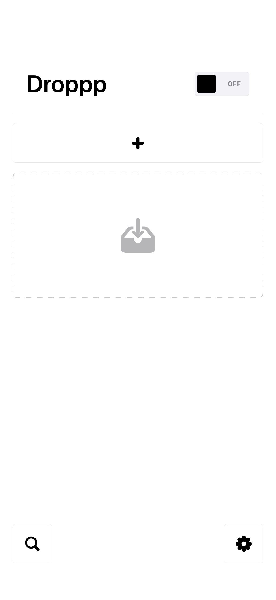
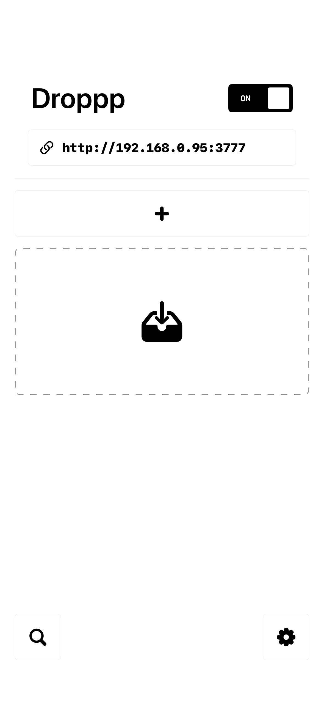
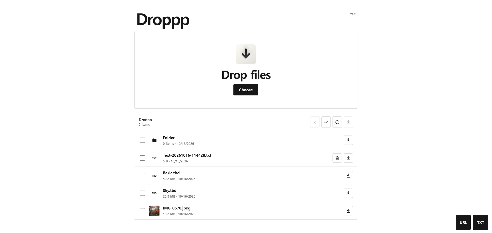
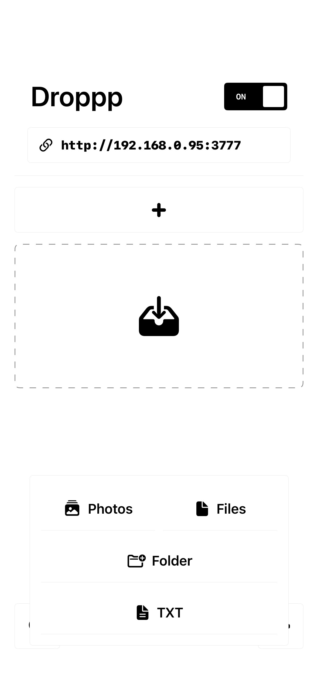
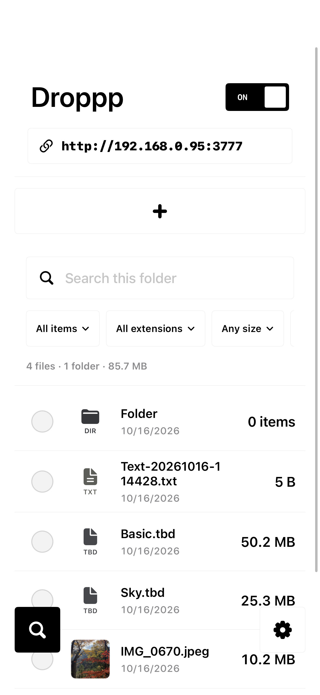
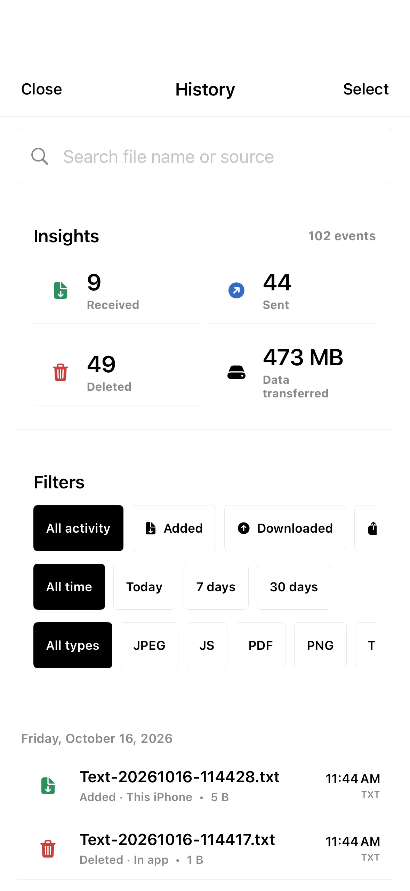
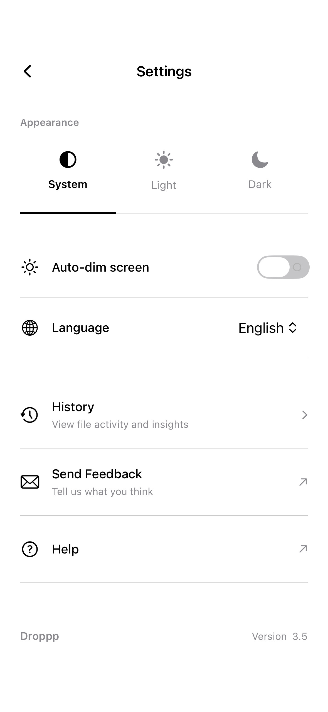

DROPPP / THE GUIDE
Your first drop.
And every one after.
A few simple steps from a file on one device to a file on another. Start with Droppp and a shared Wi-Fi network.
Before you start
- Install Droppp on your iPhone or iPad.
- Connect both devices to the same Wi-Fi network.
- Keep Droppp open while the local server is running.
Switch on the local server.
Open Droppp and turn on the switch in the upper-right corner. When the server is running, a local address appears beneath the app name.


Open your address in a browser.
On your computer, Android device, or tablet, open the local address displayed in Droppp. Both devices need to be connected to the same Wi-Fi. Tap the address in the app to copy it, or use the QR option when scanning is easier.

Use the address shown on your own device. The address in these screenshots is an example and may be different from yours.
Drop in. Download back out.
Drag files onto the browser’s drop area, or use its file picker to choose what to upload. Received files appear in Droppp on your iPhone or iPad. To move a file the other way, use the download controls beside files in the browser list.
Leave Droppp open during the transfer. If you leave the app or the display turns off, return to Droppp and restart the server before connecting again.
Keep your files in order.
Tap the add button to bring in photos or files, create a folder, or add a text file. Use search to find an item in the current folder and filter by type, extension, or size.


You can also drag files into Droppp from other apps. Select saved files to share, delete, or move them into apps that support drag and drop.
See what moved.
Open History from Settings to review your recent file activity.
Your activity, at a glance.
Insights show received, sent, and deleted items along with the amount of data transferred.
Narrow the view.
Search for a file name or source, and use the activity, time, and file-type filters to find a specific event.

Make it feel like yours.
Open Settings using the gear button in the lower-right corner of Droppp.
Appearance & language.
Follow your system appearance, or choose Light or Dark. Set your preferred app language here, too.
Auto-dim screen.
When enabled, Droppp keeps the current brightness for 10 seconds, then lowers it while the server is on.
Help is always here.
Return to this guide from the Help row in Settings.

A few useful details.
Quick answers for your next transfer.
Why can’t the browser connect?
Check that both devices are on the same Wi-Fi, the local server is switched on, and Droppp is still open. Use the full address currently displayed in the app. If the server has stopped, turn it on again and retry.
How do I select all files?
After selecting files, tap the selected item count in the lower-left corner to select all files.
Can I change the server port?
Press and hold the local server address in Droppp, then enter the port number you want to use. Connect using the updated address.
Where are my files stored?
Received files are stored locally inside Droppp on your iPhone or iPad. They stay there until you move or delete them, or remove the app.
Do I need an account or a cloud service?
No account is required. Transfers use your local Wi-Fi network, and Droppp does not upload your files to a cloud service.
Ready for your next drop?
Back to Droppp